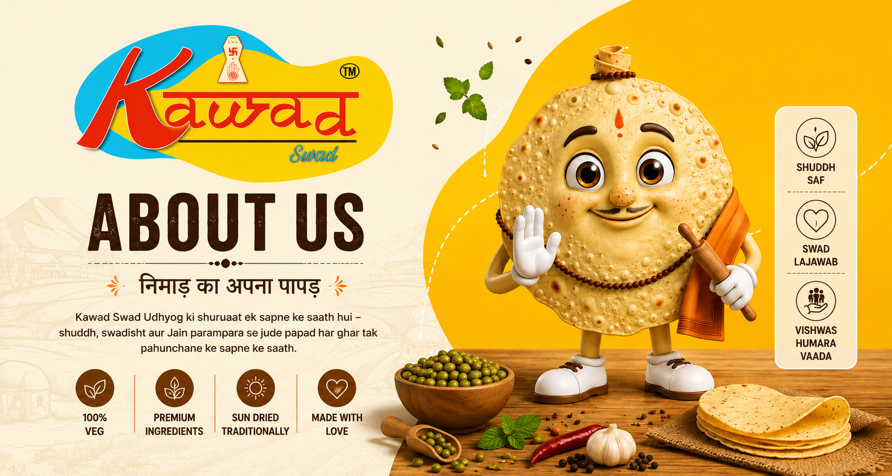
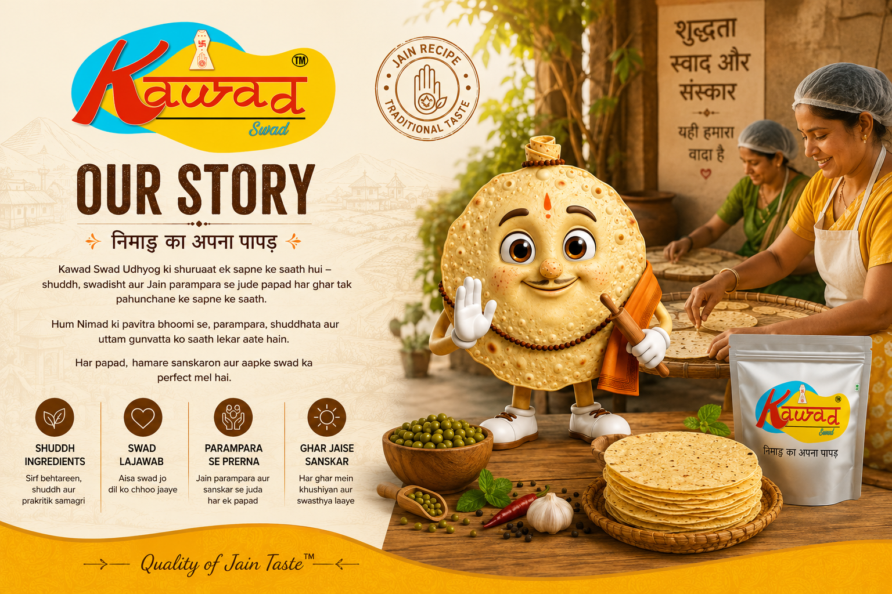

Our Story
Kawad Swad Udhyog was established in the fertile Nimar region of Madhya Pradesh with a profound commitment to preserving traditional culinary heritage. Rooted in authentic recipes, our enterprise crafts 100% vegetarian Jain papads that deliver crisp, pure taste without compromising on quality or strict dietary guidelines.
From sourcing selected quality pulses to employing hygienic processing standards, Kawad Swad has expanded its reach across domestic and regional markets, becoming a trusted brand for households, retailers, and commercial distributors.
Our Mission
To manufacture authentic, high-quality, and 100% vegetarian Jain papads using pure ingredients and hygienic processes, bringing traditional regional taste to every Indian home with trust and transparency.
Our Vision
To become a nationally recognized leader in the traditional FMCG food sector by expanding our distribution network, upholding manufacturing excellence, and serving diverse culinary preferences.
Why KAWAD SWAD
Premium Ingredients
Rigorous selection of clean pulses, authentic spices, and uncompromised quality standards.
Traditional Recipes
Formulated with authentic Nimar regional spice ratios for genuine homemade flavor.
Modern Manufacturing
Advanced automated rolling and drying equipment operating under strict hygiene controls.
Consistent Taste
Multi-stage testing ensuring uniform thickness, crunch, and flavor in every single batch.
Our Core Values
Quality
Unwavering dedication to raw material testing, clean processing, and standard packaging.
Trust
Building long-term transparent relationships with consumers, stockists, and wholesale partners.
Integrity
Strict compliance with 100% vegetarian and Jain dietary principles across all variants.
Hygiene
Sanitized processing environments adhering strictly to FSSAI food safety regulations.
Innovation
Integrating modern food processing technology while keeping traditional recipes intact.
Customer First
Ensuring prompt delivery, fair pricing, and complete satisfaction across all touchpoints.
A Message From Our Founder
“Our pledge at Kawad Swad has always been simple: never compromise on taste or dietary purity. Every papad that leaves our manufacturing facility carries the trust of our tradition and the quality our consumers deserve.”
Experience the Taste of Tradition
Join thousands of satisfied households and commercial partners across India.